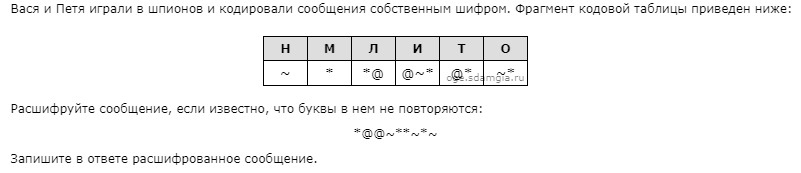
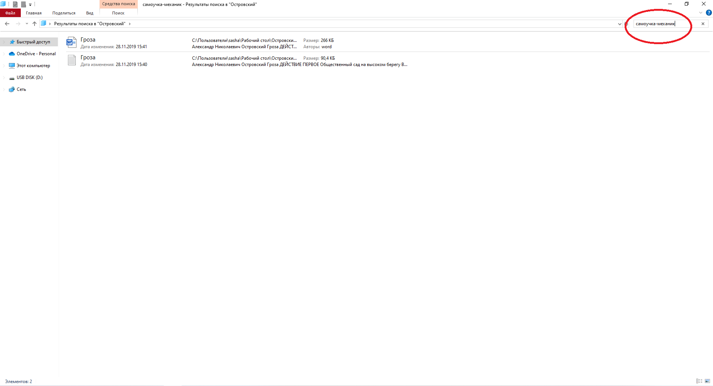
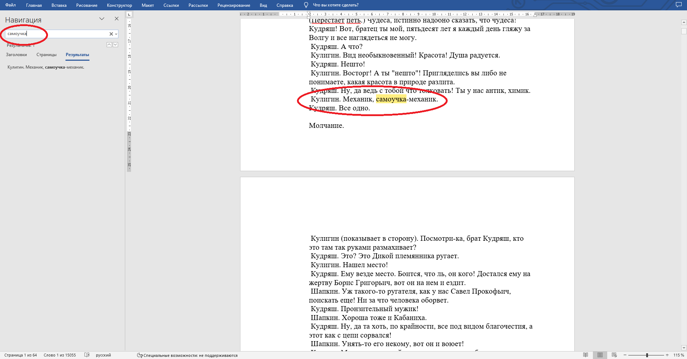
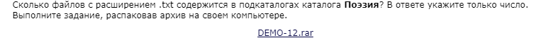
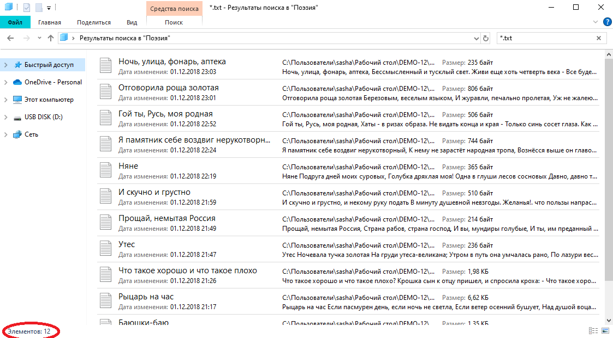

Сайт создан для подготовки детей к успешной сдаче Основного Государственного Экзамена (ОГЭ) по информатике. Он призван помочь ученикам получить глубокие знания и навыки в области информатики, необходимые для успешного прохождения экзамена и поступления в средние специальные и высшие учебные заведения.
Задание №1
Чтобы нам решить эту задачу нам надо использовать формулу нахождения текстовой информации в текстовом сообщении I = K × i. I – информационный вес сообщения, K – количество символов, i – вес 1 символа. В данной задаче 1 символ кодируется 8 битами, значит i = 8 бит. Далее в задаче говорится, что размер нового предложения в данной кодировке оказалось на 11 байт меньше, значит I = 11 байт. Перед тем как решить задачу переведем все в байты. 8 бит = 1 байт. Начнем, подстраиваем формулу под задачу K = I/i. Решаем, K = 11/1 = 11, но это еще не финальный ответ, так как сократился еще пробел и запятая, значит 11 – 2 = 9. Ищем слово, которое имеет в себе 9 символов.
Ответ: Сальвадор
Задание №2

Данное задание не составит вам труда, но единственное что я могу вам посоветовать это начинать с конца так вам будет немного легче.
Ответ: Лимон
Задание №3
В задаче сказано, что высказывание истинное, значит менять ничего не нужно. Далее записываем выражение помня, что если перед значением стоит «не», то знак внутри него меняется, наоборот.
У нас получилось значение в виде:
(X > 10) И (X <= 16).
Значит, наибольшее число, для которого высказывание будет истинным — 16.
Ответ: 16.
Задание №4
В данной задаче нам надо найти кротчайший путь между пунктами A и D. Чтобы решить данную задачу нам надо построить дороги между пунктами. Каждая цифра в таблице — это дорога между данными пунктами, если цифры нет значит дороги нет.
Дальше с помощью этого неориентированного графа мы построим все возможные пути.
ABCD=7;
AD=8;
AED=6.
Ответ:6.
Задание №5
Чтобы решить данную задачу нам надо перевести алгоритм программы в уравнение.
(6 + 1 + 1) × b + 1 + 1 = 82.
Упростим данное уравнение:
8b + 2 = 82.
Решим данное уравнение:
8b = 82 – 2;
8b = 80;
b = 80 ÷ 8;
b = 10.
Ответ: 10
Задание №6
В задании нам нужно найти сколько всего было запусков, при которых программа напечатала «NO». Чтобы это сделать нам нужно знать, что значение s – первое число, а значение t – второе число. Между значениями написано слово «and» это значит, что программа будет работать если будут выполнены оба условия, если бы там было слово «or» для правильного выполнения программы хватило бы и одного верного значения. Далее просто подбираем значения.
Все запуски, при которых программа напечатала «NO»:
В ответе мы пишем количество подходящих нам значений.
Ответ: 6.
Задание №7
Адресация файлов сети интернета у нас всегда следующая: протокол://сервер/файл.
Дальше подбираем цифры как в задании №2.
У нас в итоге получилось: https://org.net/sotr.pdf
Ответ: ЕВДГЖБА
Задание №8
Данное задание мы решим по формуле: N a = N a или b + N a и b – N b
Подставляем числа:
N a = 3300 + 200 – 2000
N a = 1500
Ответ: 1500
Задание №9
В этом задании мы будем подписывать у каждого пункта количество путей ведущих в него причем суммируя все остальные, которые были до него.
Начинаем мы с пункта А и подписываем его единичкой.
В пункт В мы пока не можем попасть, так как в пункт В ведут две стрелки из пункта А и пункта Б.
В пункт Б идет стрелка из пункта А, а в пункте А была 1, переписываем ее.
В пункт В суммарно идет две стрелки, складываем их и получаем 2.
Так дальше продолжаем пока не дойдём до конца.
В итоге у нас получилось 22.
Ответ: 22
Задание №10
В данной задаче нам надо найти наибольшее число из предложенных. Чтобы нам ее решить надо перевести все числа в десятичную систему счисления.
59 16 = 89 10;
126 8 = 86 10;
1011100 2 = 92 10.
Таким образом, наибольшим среди этих трех чисел является число 92.
Ответ: 92
Задание №11
Для начала нам нужно извлечь файл и зайти в него. Далее в строке поиска введем «механик-самоучка».

Таким образом, найдем файл Гроза. Откроем его и с помощью поисковых средств текстового редактора найдем фрагмент текста, в котором упоминается фамилия данного персонажа.

Ответ: Кулигин
Задание №12

Это задание почти такое же как задание №11. Также извлекаем файл и заходим в него, а потом зайдя в папку поэзия в поисковой строке пишем *.txt.

В нижнем правом углу смотрим сколько всего элементов.